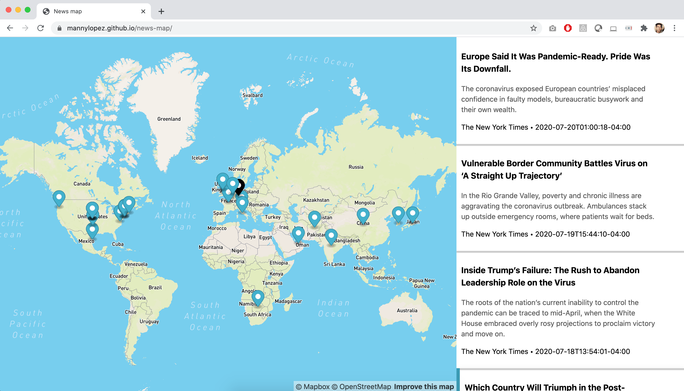

Map of the The New York Times' top stories
Created by querying the New York Times API for the top stories of the day, then using the Mapbox Geocoding API to find the latitude and longitude, then putting it all together and displaying it on a map.
The more one does and sees and feels, the more one is able to do, and the more genuine may be one's appreciation of fundamental things like home, and love, and understanding companionship.
- Amelia Earhart